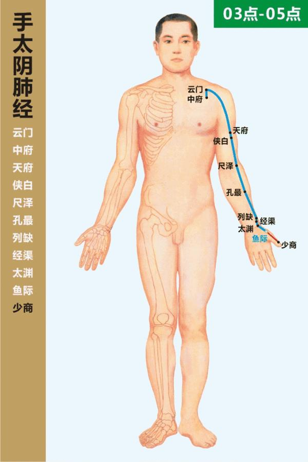

十二正经与奇经八脉
手太阴肺经

循行概述
起于中焦，下络大肠，返循胃口，上膈属肺；从肺系横出腋下，沿上肢内侧前缘至拇指桡侧端，并由列缺处分支至食指，与大肠经相接。
传统功能与联系
传统上属肺、络大肠，联系肺系、胸、喉及上肢内侧前缘；常用于记忆呼吸系统、咽喉与经脉所过部位的传统主治归类。
主要穴位（学习清单）
- 中府 LU1
- 云门 LU2
- 天府 LU3
- 侠白 LU4
- 尺泽 LU5
- 孔最 LU6
- 列缺 LU7
- 经渠 LU8
- 太渊 LU9
- 鱼际 LU10
- 少商 LU11
此清单收录常用或定位意义突出的穴位，并非该经全部穴位，也不是处方。穴名、代码及定位应以采用的国家标准或教材版本核对。
Google AI Overview（用户整理）
以下内容由用户于 2026-10-03 从 Google AI Overview 整理粘贴，保留原链接与编号。它可能包含错误、来源质量差异或未经充分验证的医疗主张；仅供对照学习，不作为诊断、治疗或自我针灸建议。
手太阴肺经是人体十二经脉之首，左右两侧共有22个穴位。 [1, 2]
基本概况
- 走向：从胸走手（起于中焦，终于大拇指端）
- 表里关系：与手阳明大肠经相表里
- 穴位数量：每侧11穴，双侧共22穴 [1, 2, 3]
循行路线
- 主干路线：起始于中焦胃部，向下联络大肠，回过来沿着胃上口，穿过膈肌，属于肺脏。从气管、喉咙部横出腋下，沿着上臂内侧前缘下行，经过肘窝、前臂内侧桡骨边缘，进入手腕桡动脉搏动处（寸口），走大鱼际边缘，出大拇指桡侧端（少商）。
- 分支：从腕后（列缺穴）分出，走向食指桡侧端，连接手阳明大肠经。 [2, 4, 5, 6]
属下十一穴位
- 中府 (LU1)
- 云门 (LU2)
- 天府 (LU3)
- 侠白 (LU4)
- 尺泽 (LU5)
- 孔最 (LU6)
- 列缺 (LU7)
- 经渠 (LU8)
- 太渊 (LU9)
- 鱼际 (LU10)
- 少商 (LU11) [7]
主要主治
- 呼吸系统：咳嗽、气喘、咯血、胸痛。
- 五官咽喉：咽喉肿痛、扁桃体炎、鼻炎。
- 其他：经脉循行部位的关节和肌肉酸痛。 [2, 8]
如果你想了解更多，请告诉我：
- 你想查询某个具体穴位（如尺泽、列缺、太渊）的准确位置与作用吗？
- 还是想了解如何通过日常保健来调理肺经？
[3] https://www.zenheart.com.tw
记忆任务
- 用一句话复述起点、主干方向和终点。
- 在人体轮廓上标出经脉所在的前、中、后或内、外侧。
- 从清单中先记原穴、络穴、郄穴、五输穴和常见交会穴，再补充其他穴位。
学习与安全边界：经络、功能和主治均按传统理论表述，不等同于现代解剖结构或已证实机制。穴位列表用于识记，不提供自我针刺指导；针刺可能导致感染、出血、气胸或其他损伤，应由符合当地资质要求的专业人员实施。